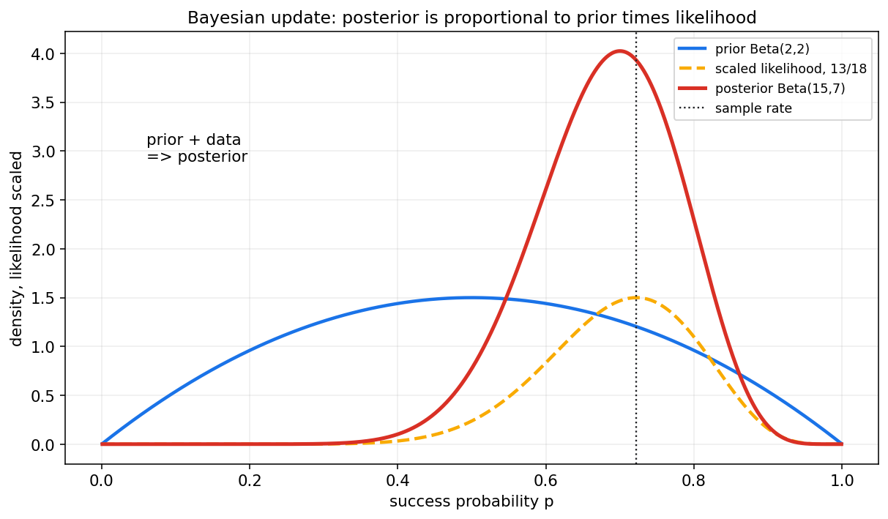
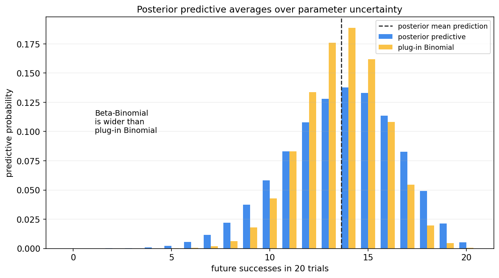
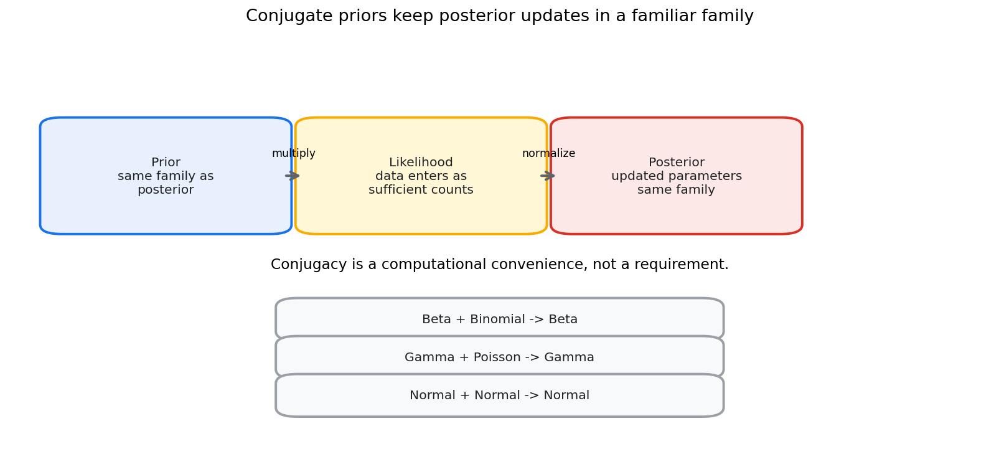
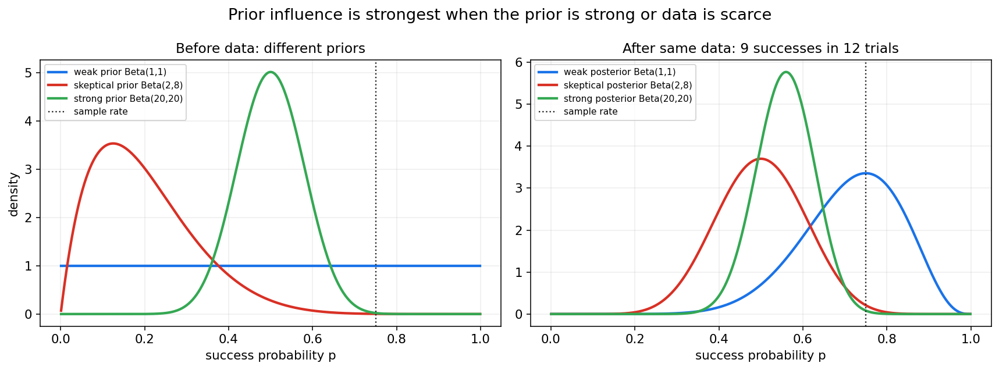

贝叶斯统计第十二章教程: 贝叶斯视角, 先验, 后验与共轭族
前面几章主要采用频率学派视角:
参数是固定但未知的, 样本是随机的.
贝叶斯统计换一个角度:
参数虽然在现实中有一个真实值, 但我们对它不知道,
所以可以用概率分布表达这种认知不确定性.这一章要解决四个问题:
1. 贝叶斯视角和频率学视角到底差在哪里?
2. 先验, 似然, 后验分别在模型中扮演什么角色?
3. 共轭先验为什么常见, 它是不是唯一选择?
4. 后验预测分布为什么比只报一个参数点估计更接近真实预测?
0. 先看全章主线
第十二章的主线可以压成下面这张图:
flowchart LR
A["未知参数 theta"] --> B["先验 p(theta)<br/>数据前的不确定性"]
C["样本数据 D"] --> D["似然 p(D|theta)<br/>数据对参数的支持"]
B --> E["贝叶斯更新"]
D --> E
E --> F["后验 p(theta|D)<br/>数据后的不确定性"]
F --> G["后验摘要<br/>均值, 区间, MAP"]
F --> H["后验预测<br/>p(new data|D)"]
E --> I["共轭先验<br/>计算更方便"]一句话概括这一章:
贝叶斯统计的核心不是某个单独公式,
而是把认知不确定性显式写进模型,
再让数据一步步更新它.
1. 贝叶斯视角与频率学视角
1.1 频率学派的基本视角
频率学派通常把参数看成固定但未知的常数:
样本是随机的:
因此它研究的是:
- 估计量在重复抽样中怎样波动
- 置信区间构造方法的长期覆盖率
- 检验规则的第一类错误和第二类错误
1.2 贝叶斯的基本视角
贝叶斯统计把参数的不确定性也写成概率分布:
观察数据后, 用贝叶斯公式更新为:
这里的概率表达的是:
在已有信息下, 我们对参数取值的不确定性.
1.3 两种视角不是谁完全替代谁
频率学派强调长期重复抽样性质.
贝叶斯强调条件于当前数据和先验信息后的不确定性.
实际工作中, 两种视角都常用:
- 用频率学派方法做 A/B 测试和错误控制
- 用贝叶斯方法表达先验知识和后验预测
- 用模拟检查贝叶斯方法的频率学性质
重要的是知道自己在说哪一种概率.
2. 参数为什么可以被视作随机变量
2.1 不是说真实世界在反复抽参数
贝叶斯里说参数有分布, 不一定意味着真实世界每次都重新抽一个参数.
更准确地说:
参数分布表达的是我们对参数的认知状态.
例如一个硬币的真实正面概率可能固定为某个值 $p$.
但在抛之前, 我们不知道它是多少, 可以用一个分布表达这种不知道.
2.2 数据会改变认知状态
抛硬币之前, 我们可能认为:
看到 18 次中有 13 次正面后, 我们对 $p$ 的判断应该向较大的值移动.
这就是贝叶斯更新.

图中蓝线是先验, 黄线是缩放后的似然, 红线是后验.
后验同时受到先验和数据影响.
3. 先验, 似然, 后验
3.1 贝叶斯公式
贝叶斯公式写作:
其中:
- $p(\theta)$ 是先验
- $p(D\mid \theta)$ 是似然
- $p(\theta\mid D)$ 是后验
- $p(D)$ 是证据或边际似然
在参数推断中常写成比例式:
因为 $p(D)$ 对 $\theta$ 来说只是归一化常数.
3.2 先验 prior
先验描述看到当前数据之前对参数的认知.
先验可以来自:
- 过往实验
- 领域知识
- 物理约束
- 保守假设
- 弱信息设定
先验不是乱猜.
好的先验应当可解释, 可检查, 并尽量做敏感性分析.
3.3 似然 likelihood
似然描述在给定参数下, 观察到当前数据的支持程度:
它和第八章极大似然中的似然是同一个对象.
区别在于贝叶斯会把似然和先验相乘, 得到整条后验分布.
3.4 后验 posterior
后验是看到数据后的参数不确定性:
后验可以用来计算:
- 后验均值
- 后验中位数
- MAP
- 可信区间
- 后验预测分布
它不是一个单点答案, 而是一整条分布.
4. 后验预测分布
4.1 为什么不只预测参数
很多实际问题关心的是未来数据, 不是参数本身.
例如:
已经观察到 18 次试验 13 次成功, 下一批 20 次大概会成功几次?
如果只用一个点估计 $\hat p$ 做预测, 会忽略参数不确定性.
贝叶斯的后验预测会把参数不确定性积分掉:
这句话非常关键:
预测时不是只代入一个参数, 而是对所有可能参数按后验权重平均.
4.2 后验预测图

图中蓝色是 Beta-Binomial 后验预测分布.
黄色是把后验均值当作固定参数的 plug-in Binomial 分布.
后验预测通常更宽, 因为它额外考虑了参数不确定性.
4.3 和机器学习预测的关系
机器学习中也常问:
对新样本, 模型预测的不确定性有多大?
贝叶斯后验预测直接回答这个问题.
它把参数不确定性和观测噪声一起纳入预测.
5. 共轭先验
5.1 什么是共轭
如果先验和后验属于同一分布族, 就称这个先验是该似然的共轭先验.
例如:
观察数据前是 Beta 分布, 观察数据后仍然是 Beta 分布, 只是参数更新了.

5.2 共轭的价值
共轭先验的价值是计算方便:
- 更新公式简单
- 后验形式清楚
- 容易做教学和手算
- 容易解释先验参数的含义
但共轭不是必须的.
真实问题中, 更重要的是模型是否表达了合理的不确定性.
5.3 共轭不是唯一合理选择
如果非共轭先验更符合领域知识, 完全可以使用.
只是后验可能没有闭式形式, 需要数值积分, MCMC 或变分推断.
这会在第十三章继续展开.
6. Beta-Binomial 模型
6.1 模型设定
设成功概率为 $p$, 数据为 $n$ 次试验中的成功次数 $x$:
选择先验:
Beta 密度为:
似然为:
所以后验:
即:
6.2 伪计数直觉
Beta 先验参数可以理解成伪计数:
- $\alpha-1$ 像先验成功次数
- $\beta-1$ 像先验失败次数
也常把 $\alpha+\beta$ 看作先验强度.
例如:
是均匀先验.
表达很强的先验, 认为 $p$ 接近 0.5.
6.3 不同先验的影响

同一份数据下, 弱先验会更快跟随数据, 强先验会让后验移动得更慢.
因此报告贝叶斯结果时, 最好说明:
- 使用了什么先验
- 先验强度多大
- 换合理先验后结论是否稳定
7. Gamma-Poisson 模型
7.1 计数问题
Poisson 分布常用于单位时间或单位空间内的计数:
例如:
- 每小时请求数
- 每天故障数
- 每页错别字数
7.2 Gamma 先验
Poisson 速率 $\lambda>0$, 因此常用 Gamma 先验:
这里采用 rate 参数化:
若观察到 $n$ 个计数, 总和为:
似然为:
后验为:
7.3 直觉
先验中的 $\alpha$ 像先验事件数, $\beta$ 像先验观测时长.
数据把事件数加到 $\alpha$ 上, 把曝光量加到 $\beta$ 上.
这对流量, 故障率和稀有事件建模很有用.
8. Normal-Normal 模型
8.1 已知方差的正态均值问题
设:
且 $\sigma^2$ 已知.
对均值设正态先验:
则后验仍是正态:
8.2 精度加权平均
后验精度为:
后验均值为:
这说明后验均值是先验均值和样本均值的精度加权平均.
8.3 直觉
如果先验很确定, 即 $\tau_0^2$ 很小, 后验会更靠近 $\mu_0$.
如果数据量大或观测噪声小, 后验会更靠近 $\bar x$.
贝叶斯更新不是简单平均, 而是按信息精度加权.
9. 先验选择
9.1 先验不是装饰
先验会影响后验, 尤其在样本量小的时候.
因此先验选择必须透明.
常见做法:
- 使用领域知识构造信息先验
- 使用弱信息先验约束合理范围
- 使用参考先验或近似客观先验
- 做先验敏感性分析
9.2 主观先验
主观先验来自专家知识或历史经验.
例如某系统历史转化率长期在 2% 到 4% 之间, 新实验转化率先验可以围绕这个范围设定.
主观不等于随意.
它需要:
- 说明来源
- 转换成可解释参数
- 接受他人检查
- 做敏感性分析
9.3 弱信息先验
弱信息先验不强行给出精确答案, 但排除明显不合理区域.
例如正尺度参数必须为正, 回归系数不应大到离谱.
弱信息先验能帮助模型稳定, 尤其在数据稀少或分离问题中.
9.4 客观先验初步
客观先验试图减少主观影响, 如均匀先验或 Jeffreys 先验.
但"客观"并不意味着没有选择.
不同参数化下的均匀先验可能对应不同含义.
所以更稳妥的态度是:
明确先验含义, 检查先验影响, 而不是宣称先验不存在.
10. 可信区间与置信区间
10.1 可信区间
贝叶斯后验中, $95%$ 可信区间表示:
这是在给定数据和先验后, 参数落在区间内的后验概率.
10.2 置信区间
频率学派 $95%$ 置信区间表示:
重复抽样并重复构造区间时, 约 95% 的区间覆盖真实参数.
它不是对某个固定区间内部参数概率的陈述.
10.3 区分语言
两种区间形式可能数值相近, 但解释不同:
- credible interval: 条件于数据和先验的参数概率陈述
- confidence interval: 构造方法的长期覆盖率陈述
报告时不要混用.
11. 后验摘要
11.1 后验均值
后验均值:
常作为平方损失下的贝叶斯估计.
11.2 后验中位数
后验中位数满足:
它在偏态后验中可能比均值更稳健.
11.3 MAP
MAP 是后验密度最大的位置:
它是点估计, 不是完整贝叶斯推断.
11.4 不要只报一个点
贝叶斯的优势在于保留整条不确定性分布.
如果只报 MAP, 很多时候会丢掉后验宽度, 偏态和多峰结构.
12. 本章主线总结
第十二章可以压成几句话:
- 频率学派把参数看成固定未知量, 贝叶斯用分布表达参数不确定性.
- 先验表示数据前认知, 似然表示数据支持, 后验表示数据后认知.
- 贝叶斯更新公式是 $p(\theta|D)\propto p(D|\theta)p(\theta)$.
- 后验预测分布通过积分平均参数不确定性.
- 共轭先验让后验更新保持同一分布族, 但不是唯一合理选择.
- Beta-Binomial, Gamma-Poisson, Normal-Normal 是三类基础共轭模型.
- 先验选择应透明, 可解释, 可做敏感性分析.
- 可信区间和置信区间解释不同, 不能混用.
本章最重要的提醒是:
贝叶斯统计不是把贝叶斯公式背下来,
而是把不确定性建模, 更新和预测连成一套推断语言.
13. 典型题型与实战清单
13.1 典型题型
- 写出贝叶斯更新
- 写先验
- 写似然
- 写后验比例式
- Beta-Binomial 更新
- 先验 $\mathrm{Beta}(\alpha,\beta)$
- 成功 $x$, 失败 $n-x$
- 后验 $\mathrm{Beta}(\alpha+x,\beta+n-x)$
- Gamma-Poisson 更新
- 先验 $\mathrm{Gamma}(\alpha,\beta)$
- 总计数 $s$, 曝光量 $n$
- 后验 $\mathrm{Gamma}(\alpha+s,\beta+n)$
- Normal-Normal 更新
- 后验精度等于先验精度加数据信息
- 后验均值是精度加权平均
- 解释后验预测
- 写积分
- 说明对参数不确定性求平均
- 区分可信区间和置信区间
- 可信区间是后验概率陈述
- 置信区间是长期覆盖率陈述
13.2 实战清单
做贝叶斯建模时, 可以按下面顺序检查:
- 参数是什么?
- 数据似然是什么?
- 先验表达了什么信息?
- 先验强度相当于多少数据?
- 后验是否有闭式形式?
- 如果没有闭式形式, 用什么计算方法?
- 结果对先验是否敏感?
- 需要参数后验, 还是后验预测?
- 是否报告了后验区间?
- 是否清楚区分了贝叶斯解释和频率学解释?
14. 典型误区
误区 1: 把先验理解成主观乱猜
先验可以来自历史数据, 专家知识, 物理约束或弱信息约束.
关键是透明, 可解释, 可检查.
误区 2: 只会写后验比例式
比例式只是第一步.
真正的贝叶斯推断还要归一化, 总结后验, 做预测和检查先验敏感性.
误区 3: 把后验预测当成 plug-in 预测
plug-in 预测只代入一个参数估计.
后验预测会对参数后验积分, 通常更能反映不确定性.
误区 4: 把共轭先验当成唯一合理先验
共轭先验计算方便, 但现实建模应优先考虑表达是否合理.
误区 5: 把 MAP 当成完整贝叶斯
MAP 是一个点.
完整贝叶斯推断关心整条后验分布和后验预测.
误区 6: 混淆可信区间和置信区间
可信区间允许说后验概率.
置信区间说的是长期覆盖率.
两者语言不能混用.
15. 和前后章节的连接点
15.1 和第二章的连接
第二章讲贝叶斯公式.
本章把公式扩展成完整的参数推断框架.
15.2 和第八章的连接
MLE 最大化似然.
MAP 最大化先验乘似然.
贝叶斯后验则保留整条参数分布.
15.3 和第十三章的连接
本章主要讲有闭式形式或易解释的模型.
第十三章会处理后验算不出来时怎么办, 包括 MAP, MCMC 和变分推断.
15.4 和机器学习的连接
后验预测, 先验正则化, 不确定性估计, 贝叶斯模型平均, 都是机器学习中的重要思想.
16. 本章收尾
贝叶斯统计把不确定性从参数估计一路带到预测.
它的基本姿态是:
先承认我们不知道,
再用先验表达不知道的方式,
最后用数据更新这种不知道.
下一章会进入更实际的问题:
当后验分布没有闭式答案时, 我们怎样用 MAP, MCMC 和变分推断去近似它.